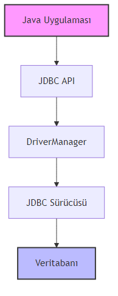
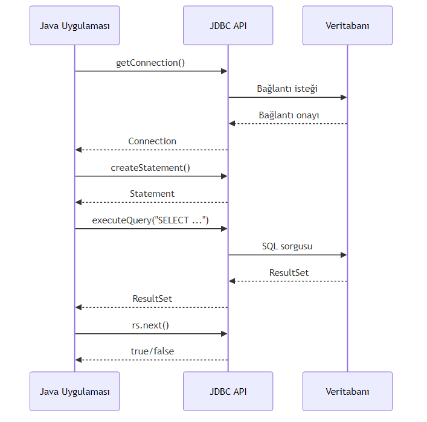

Java’nin Temelleri
2026
title: "JDBC ile Veritabanı Programlamaya Giriş"
subtitle: "Java ile Veritabanı Bağlantısı, CRUD İşlemleri ve Güvenli Sorgulama"
author: "Teknik Kitap Yazarı"
date: "2025-03-25"
lang: "tr"JDBC (Java Database Connectivity), Java uygulamalarının veritabanlarıyla iletişim kurmasını sağlayan standart bir API’dir. JDBC, veritabanına bağımsız bir şekilde SQL sorguları çalıştırmanıza, veri okumanıza ve yazmanıza olanak tanır.
JDBC, Java SE’nin bir parçasıdır ve java.sql paketinde bulunur. Herhangi bir veritabanıyla (MySQL, PostgreSQL, Oracle, H2, vb.) çalışmak için uygun JDBC sürücüsünü kullanmanız yeterlidir.
JDBC mimarisi iki katmandan oluşur:
Connection, Statement, ResultSet).
### 1.2. JDBC Sürücü TürleriJDBC dört tür sürücü destekler:
| Tür | Açıklama | Örnek |
|---|---|---|
| Tip 1 | JDBC-ODBC Köprüsü | Eski, nadiren kullanılır |
| Tip 2 | Yerel API | Oracle OCI |
| Tip 3 | Ağ Protokolü | Middleware |
| Tip 4 | Saf Java | MySQL Connector/J |
💡 Pedagojik Not: Tip 4 sürücüler en yaygın kullanılanlardır çünkü platform bağımsızdır ve ek yazılım gerektirmez.
Bu bölümde H2 Database kullanacağız. H2, Java ile yazılmış, hafif ve gömülü bir veritabanıdır. Geliştirme ve test için idealdir.
H2’nin avantajları: - Sıfır konfigürasyon - Bellek içi (in-memory) mod - SQL uyumluluğu
Maven (pom.xml):
<!-- pom.xml -->
<dependency>
<groupId>com.h2database</groupId>
<artifactId>h2</artifactId>
<version>2.2.224</version>
<scope>runtime</scope>
</dependency>Gradle (build.gradle):
dependencies {
runtimeOnly 'com.h2database:h2:2.2.224'
}JDBC ile veritabanı işlemleri dört adımda gerçekleşir:
İlk adım, veritabanına bağlanmaktır. DriverManager.getConnection() metodu kullanılır.
import java.sql.Connection;
import java.sql.DriverManager;
import java.sql.SQLException;
public class DatabaseConnectionExample {
public static void main(String[] args) {
// H2 veritabanı URL'si (bellek içi mod)
String url = "jdbc:h2:mem:testdb";
String username = "sa";
String password = "";
try (Connection connection = DriverManager.getConnection(url, username, password)) {
System.out.println("Veritabanına başarıyla bağlanıldı!");
System.out.println("Auto-commit modu: " + connection.getAutoCommit());
} catch (SQLException e) {
System.err.println("Bağlantı hatası: " + e.getMessage());
}
}
}⚠️ Dikkat:
try-with-resourceskullanarakConnectionotomatik olarak kapatılır. Bu, kaynak sızıntılarını önler.
Bağlantı kurulduktan sonra SQL sorgularını çalıştırmak için Statement nesnesi oluşturulur.
import java.sql.Connection;
import java.sql.DriverManager;
import java.sql.SQLException;
import java.sql.Statement;
public class StatementExample {
public static void main(String[] args) {
String url = "jdbc:h2:mem:testdb";
try (Connection conn = DriverManager.getConnection(url, "sa", "");
Statement stmt = conn.createStatement()) {
System.out.println("Statement başarıyla oluşturuldu.");
} catch (SQLException e) {
e.printStackTrace();
}
}
}SQL sorguları executeQuery() (SELECT için) veya executeUpdate() (INSERT, UPDATE, DELETE için) metotlarıyla çalıştırılır.
import java.sql.*;
public class QueryExample {
public static void main(String[] args) {
String url = "jdbc:h2:mem:testdb";
try (Connection conn = DriverManager.getConnection(url, "sa", "");
Statement stmt = conn.createStatement()) {
// Tablo oluştur
stmt.execute("CREATE TABLE IF NOT EXISTS users (id INT PRIMARY KEY, name VARCHAR(100))");
// Veri ekle
stmt.executeUpdate("INSERT INTO users VALUES (1, 'Ali')");
stmt.executeUpdate("INSERT INTO users VALUES (2, 'Ayşe')");
// Sorgu çalıştır
ResultSet rs = stmt.executeQuery("SELECT * FROM users");
while (rs.next()) {
int id = rs.getInt("id");
String name = rs.getString("name");
System.out.println("ID: " + id + ", Ad: " + name);
}
} catch (SQLException e) {
e.printStackTrace();
}
}
}
### 3.4. Kaynakları KapatmaHer zaman Connection, Statement ve ResultSet kaynaklarını kapatın. En iyi yöntem try-with-resources kullanmaktır.
// Yanlış: Kaynaklar kapatılmamış
Statement stmt = conn.createStatement();
ResultSet rs = stmt.executeQuery("SELECT * FROM users");
// rs ve stmt kapatılmadı!
// Doğru: try-with-resources
try (Connection conn = ...;
Statement stmt = conn.createStatement();
ResultSet rs = stmt.executeQuery("SELECT * FROM users")) {
// İşlemler
}CRUD (Create, Read, Update, Delete) işlemleri, veritabanı programlamanın temelini oluşturur.
INSERT INTO sorgusu kullanılır.
import java.sql.*;
public class CreateExample {
public static void main(String[] args) {
String url = "jdbc:h2:mem:testdb";
try (Connection conn = DriverManager.getConnection(url, "sa", "");
Statement stmt = conn.createStatement()) {
// Tablo oluştur
stmt.execute("CREATE TABLE IF NOT EXISTS products (" +
"id INT AUTO_INCREMENT PRIMARY KEY, " +
"name VARCHAR(100), " +
"price DECIMAL(10,2))");
// Veri ekle
int rowsAffected = stmt.executeUpdate(
"INSERT INTO products (name, price) VALUES ('Laptop', 15000.00)");
System.out.println("Etkilenen satır sayısı: " + rowsAffected);
} catch (SQLException e) {
e.printStackTrace();
}
}
}SELECT sorgusu ile veri okunur.
import java.sql.*;
public class ReadExample {
public static void main(String[] args) {
String url = "jdbc:h2:mem:testdb";
try (Connection conn = DriverManager.getConnection(url, "sa", "");
Statement stmt = conn.createStatement()) {
// Örnek veriler
stmt.executeUpdate("INSERT INTO products VALUES (1, 'Mouse', 250.00)");
stmt.executeUpdate("INSERT INTO products VALUES (2, 'Keyboard', 500.00)");
// Sorgu
ResultSet rs = stmt.executeQuery("SELECT * FROM products WHERE price > 300");
while (rs.next()) {
System.out.printf("Ürün: %s, Fiyat: %.2f TL%n",
rs.getString("name"), rs.getDouble("price"));
}
} catch (SQLException e) {
e.printStackTrace();
}
}
}UPDATE sorgusu ile mevcut veriler değiştirilir.
import java.sql.*;
public class UpdateExample {
public static void main(String[] args) {
String url = "jdbc:h2:mem:testdb";
try (Connection conn = DriverManager.getConnection(url, "sa", "");
Statement stmt = conn.createStatement()) {
// Önce veri ekle
stmt.executeUpdate("INSERT INTO products VALUES (1, 'Laptop', 15000.00)");
// Güncelle
int rows = stmt.executeUpdate(
"UPDATE products SET price = 14000.00 WHERE id = 1");
System.out.println("Güncellenen satır: " + rows);
} catch (SQLException e) {
e.printStackTrace();
}
}
}DELETE FROM sorgusu ile veri silinir.
import java.sql.*;
public class DeleteExample {
public static void main(String[] args) {
String url = "jdbc:h2:mem:testdb";
try (Connection conn = DriverManager.getConnection(url, "sa", "");
Statement stmt = conn.createStatement()) {
// Veri ekle
stmt.executeUpdate("INSERT INTO products VALUES (1, 'Test', 100.00)");
// Sil
int rows = stmt.executeUpdate("DELETE FROM products WHERE id = 1");
System.out.println("Silinen satır: " + rows);
} catch (SQLException e) {
e.printStackTrace();
}
}
}| Özellik | Statement | PreparedStatement |
|---|---|---|
| Performans | Her seferinde derlenir | Önceden derlenir, tekrar kullanılabilir |
| Güvenlik | SQL enjeksiyonuna açık | Parametreleri güvenli şekilde işler |
| Kullanım | Sabit sorgular | Dinamik parametreli sorgular |
Kötü niyetli kullanıcılar, giriş alanlarına SQL kodu ekleyerek veritabanına zarar verebilir.
// TEHLİKELİ: SQL enjeksiyonuna açık
String userInput = "1 OR 1=1";
String query = "SELECT * FROM users WHERE id = " + userInput;
// Çalıştırılan: SELECT * FROM users WHERE id = 1 OR 1=1
// Tüm kullanıcıları döndürür!PreparedStatement parametreleri ? ile belirtir ve güvenli şekilde işler.
import java.sql.*;
public class PreparedStatementExample {
public static void main(String[] args) {
String url = "jdbc:h2:mem:testdb";
try (Connection conn = DriverManager.getConnection(url, "sa", "");
PreparedStatement pstmt = conn.prepareStatement(
"INSERT INTO products (name, price) VALUES (?, ?)")) {
// Parametreleri ayarla
pstmt.setString(1, "Monitor");
pstmt.setDouble(2, 3000.00);
// Sorguyu çalıştır
int rows = pstmt.executeUpdate();
System.out.println("Eklenen satır: " + rows);
// Tekrar kullanım
pstmt.setString(1, "Kamera");
pstmt.setDouble(2, 4500.00);
pstmt.executeUpdate();
} catch (SQLException e) {
e.printStackTrace();
}
}
}🔒 Güvenlik İpucu: Kullanıcı girdisi içeren tüm sorgularda
PreparedStatementkullanın. Asla kullanıcı girdisini doğrudan SQL sorgusuna eklemeyin.
Toplu işlemler, birden fazla SQL sorgusunu tek seferde göndermeyi sağlar.
import java.sql.*;
public class BatchExample {
public static void main(String[] args) {
String url = "jdbc:h2:mem:testdb";
try (Connection conn = DriverManager.getConnection(url, "sa", "");
PreparedStatement pstmt = conn.prepareStatement(
"INSERT INTO products (name, price) VALUES (?, ?)")) {
conn.setAutoCommit(false); // Transaction başlat
// Toplu ekleme
for (int i = 1; i <= 1000; i++) {
pstmt.setString(1, "Product-" + i);
pstmt.setDouble(2, i * 10.0);
pstmt.addBatch();
// 100'de bir gönder
if (i % 100 == 0) {
pstmt.executeBatch();
}
}
pstmt.executeBatch(); // Kalanları gönder
conn.commit(); // Transaction'ı tamamla
System.out.println("1000 ürün başarıyla eklendi.");
} catch (SQLException e) {
e.printStackTrace();
}
}
}Transaction’lar, birden fazla işlemin atomik olarak gerçekleşmesini sağlar.
try (Connection conn = DriverManager.getConnection(url, "sa", "")) {
conn.setAutoCommit(false); // Transaction başlat
try {
// İşlem 1: Hesaptan para çek
stmt.executeUpdate("UPDATE accounts SET balance = balance - 100 WHERE id = 1");
// İşlem 2: Diğer hesaba para ekle
stmt.executeUpdate("UPDATE accounts SET balance = balance + 100 WHERE id = 2");
conn.commit(); // Her şey başarılı, onayla
System.out.println("Transfer başarılı.");
} catch (SQLException e) {
conn.rollback(); // Hata durumunda geri al
System.err.println("Transfer başarısız, işlem geri alındı.");
}
}DatabaseMetaData ile veritabanı hakkında bilgi alınabilir.
import java.sql.*;
public class MetaDataExample {
public static void main(String[] args) {
String url = "jdbc:h2:mem:testdb";
try (Connection conn = DriverManager.getConnection(url, "sa", "")) {
DatabaseMetaData metaData = conn.getMetaData();
System.out.println("Veritabanı: " + metaData.getDatabaseProductName());
System.out.println("Sürüm: " + metaData.getDatabaseProductVersion());
System.out.println("JDBC Sürücü: " + metaData.getDriverName());
System.out.println("Max Bağlantı: " + metaData.getMaxConnections());
} catch (SQLException e) {
e.printStackTrace();
}
}
}Bu bölümde JDBC ile veritabanı programlamanın temellerini öğrendik:
| Terim | Açıklama |
|---|---|
| JDBC | Java Database Connectivity, Java-veritabanı bağlantı API’si |
| Connection | Veritabanına yapılan bağlantıyı temsil eden nesne |
| Statement | SQL sorgusunu çalıştırmak için kullanılan nesne |
| PreparedStatement | Parametreli ve güvenli sorgular için önceden derlenmiş Statement |
| ResultSet | Sorgu sonucunu temsil eden tablo yapısı |
| SQL Enjeksiyonu | Kötü niyetli SQL kodunun sorguya eklenmesi saldırısı |
| Transaction | Atomik olarak gerçekleşmesi gereken işlem grubu |
| Batch İşlem | Birden fazla SQL sorgusunun toplu olarak gönderilmesi |
Statement ile PreparedStatement arasındaki temel fark nedir?try-with-resources kullanmanın avantajları nelerdir?commit() ve rollback() metotlarının görevleri nelerdir?Bir students tablosu oluşturun (id, name, grade alanlarıyla) ve aşağıdaki işlemleri gerçekleştiren bir Java programı yazın:
- 5 öğrenci ekleyin
- Tüm öğrencileri listeleyin
- Bir öğrencinin notunu güncelleyin
- Bir öğrenciyi silin
Kullanıcı adı ve şifre alan bir login sistemi yazın. PreparedStatement kullanarak SQL enjeksiyonuna karşı koruma sağlayın.
İki hesap arasında para transferi yapan bir program yazın. Transaction kullanarak işlemin atomikliğini sağlayın. Hata durumunda rollback yapın.
10000 kaydı batch işlemlerle veritabanına ekleyen bir program yazın. Performansı normal ekleme ile karşılaştırın.
Bölüm Sonu